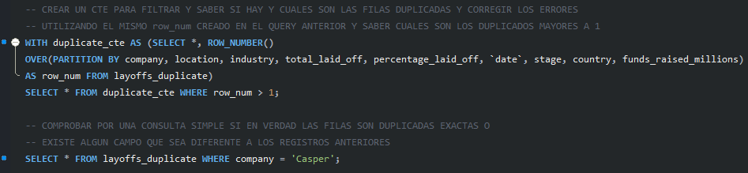
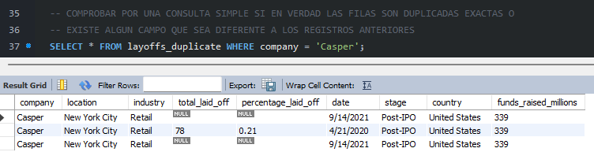
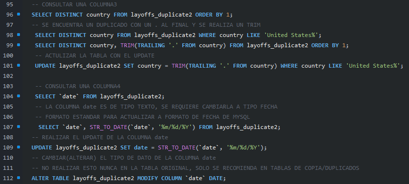
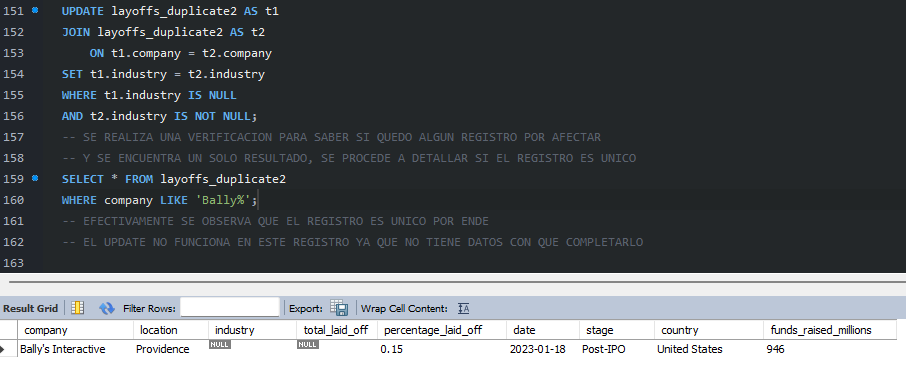
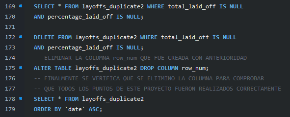
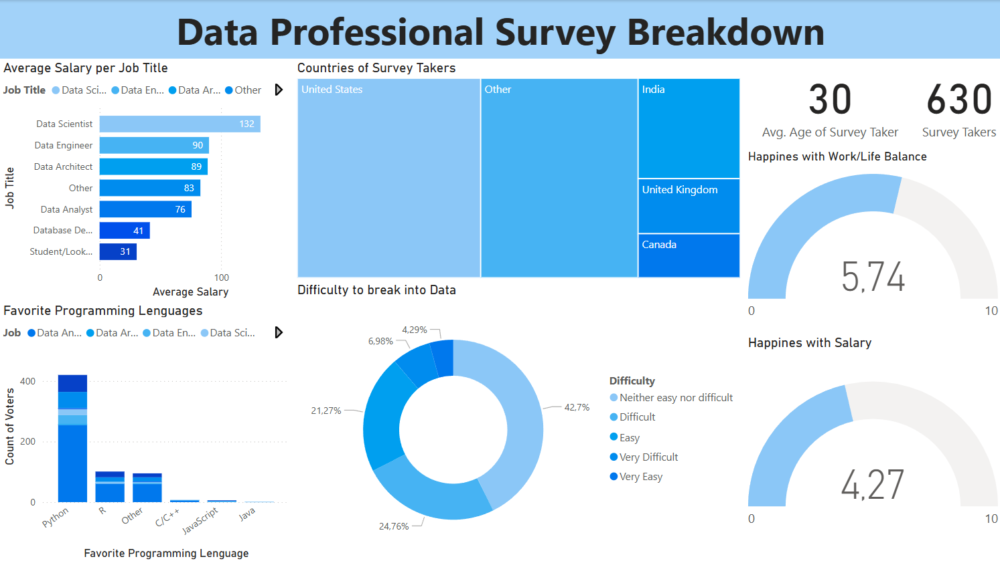

SOBRE MI
Hola, mi nombre es Jonathan Mavo, graduado en Ingenieria de Sistemas y laborando como IT Support en estos ultimos 8 años. Siempre me he mantenido enfocado
la resolucion de problemas tanto a nivel de software como hardware y por supuesto, muy a gusto con la tecnologia y mas cuando podemos ver lo mucho que hemos evolucionado
en los ultimos años saliendo del COVID-19.
Finalizando el año 2024 y empezando el 2025 observe que el mundo tecnologico esta inundado de muchas herramientas y como no puede estar mas claro, me refiero obvio a toda inteligencia
artificial que encontramos en el mercado actualmente. Aunque esto nos permite a todos aprender desde lo mas basico hasta expandir nuestros conocimientos mas profundos, soy partidario
(como deberiamos todos) de que ninguna IA reemplazara el talento humano.
Hace un año me propuse una meta y fue la de aplicar mi carrera y conocimientos en programacion en el area de analis de datos, ya que llevo casi una decada resolviendo problemas
en IT mayormente a nivel de sistemas, servidores y respaldos, por lo que este camino me llevo hasta mi primer proyecto sobre Limpieza de datos y Analisis exploratorio de datos
en donde trabaje con un dataset sobre los despidos alrededor del mundo debido al COVID-19 estandarizando distintas columnas para luego tomar nota de algunos insight tomando en cuenta los resultados
obtenidos de una tabla ya limpia mediante consultas realizadas a esta misma.
World Layoffs 2020-2023
Usando este dataset como primer proyecto se eligio desarrollar varias metricas de despidos alrededor del mundo a partir del año 2020 hasta principios del 2023. En este
sentido se establecieron algunos objetivos referentes a la limpieza de los datos y distintas preguntas que responder en un analisis exploratorio. La idea final de este
proyecto seria crear un dashboard para presentar todos los insights o resultados obtenidos.  Verificando que el dataset se importo correctamente
Verificando que el dataset se importo correctamente
Tomando en cuenta estos objetivos se empezo entonces a indagar en este proyecto. El objetivo inicial se trataba de buscar, verificar y eliminar duplicados, esto se hizo
mediante un duplicado de la tabla original ya que en muchas situaciones de la vida cotidiana, nuestra tabla origen siempre se encuentra operativa y este proyecto al ser parte
de un dataset ya creado lo trabajamos como tal, entonces, luego de crear este duplicado se empezaron a realizar distintas verificaciones. Ejemplo fue usar un CTE donde se asigna
un ROW_NUMBER a cada fila para posteriormente, si encontraba un duplicado, verificar si ese duplicado en realidad posee alguna columna con datos distintos o si una columna
verificada tenia al menos un dato igual.  Creando un CTE
Como ejemplo obtuvimos que la compañia llamada "Casper" mostraba resultados duplicados, al verificar nos damos cuenta de que de los 3 registros obtenidos, tenemos 2
que son duplicados mostrando exactamente la misma informacion.  Verificando los
registros duplicados
Procedi entonces, basandome en este resutaldo a crear una segunda tabla con los mismos datos agregando la columna "row_number" para realizar un DELETE leyendo los
distintos campos y comparandolos entre ellos y asi completar el primer objetivo de este proyecto. Luego de cumplir con la limpieza de los duplicados se pudo estandarizar todos
los datos dentro de este segundo duplicado para mantener un orden en como se presentan los resultados ya sea con toda la columna utilizando un mismo formato, una misma
abrevacion o eliminando caracateres sobrantes e innecesarios. Estandarizando registros
y cambiando la columna 'fecha' de tipo string a date
Para cumplir con este objetivo se realizaron varias consultas en distintas columnas de la tabla observando todos esos pequeñas diferencias de caracteres, espacios, signos de
puntacion y demas. Como se observa en la imagen anterior se realizaron algunos TRIM en distintas columnas, una de estas fue en la columna "country" donde se mostraba que
el pais "United States" devolvia como resultado dos registros uno indicando "United States" y otro "United States.", fueron todas esas pequeñas diferencias las que se fueron
optimizando en el camino. De igual manera en este momento de la limpieza note que la columna FECHA era del tipo STRING, al momento de trabajar con esta columna seria mas
util manejarla como columna de tipo 'date' por lo que se cambio con un STR_TO_DATE.
Siguiendo con los objetivos de este proyecto, el tercero de estos fue arreglar los espacios vaios y nulos dentro dataset. Para realizarlo de la manera mas optima posible
en primer lugar se realizo un JOIN de la misma tabla duplicada para verificar que espacios estaban vacios, nulos y como se podia proceder para actualizarlos, se decidio entonces
luego de obtener los resutlados que se realizaria un UPDATE junto a un JOIN de la misma tabla tomando en cuenta el campo "company" que le ponia como condicion actualizarlos
en campos vacios/nulos. Antes de realizar esto me di cuenta que priemro debia indicar que los campos vacios debian ser iguales a nulos para que el UPDATE no tuviera
problemas eligiendo entre las dos condiciones que eran vacios y nulos y solo eligiera campos nulos para mayor comodidad
La compañia Bally's Interactive no cumplio con ninguna condicion y fue el unico registro que no fue afectado por este UPDATE
Con los primeros tres objetivos cumplidos habia llegado el momento de los toques finales, eliminar columnas innecesarias para el Analisis Exploratorio que se
realizaria mas adelante y verificar que todo estuviera correcto en el dataset. Para este objetivo decidi eliminar las columnas "total_laid_off" "percentage_laid_off" y una de
las primeras columnas creadas en este proyecto la cual fue "row_number", las razones de cada una fueron las siguientes:
total_laid_off y percentage_laid_off: Si por alguna razon este dataset se utilizaba para crear un daskboard, la cantidad de datos nulos en ambas columnas no seria una fuente
confiable de datos ya que la cantidad de registros nulos era considerable, lo que se consideraria como datos redundantes, sin nungna funcion.
row_number: Esta columna fue creada al inicio de este proyecto con la unica intencion de cumplir con algunos queries, por ende, se consideraba innecesaria para cualquier uso
futuro. Se realizo un SELECT ordenado por el campo fecha de manera ascendente para
verificar todos los datos y dar por finalizado esta parte del proyecto.
EDA
Exploratory Data Analysis
Al momento de finalizar la limpieza de datos pude empezar a responder algunas dudas sobre toda esta informacion, estas preguntas iban desde saber cuales fueron las empresas
que despidieron a la totalidad de su plantilla o que porcentaje representaban los despidos en algunos casos. Y claro que para esto seria mejor utilizar los resultados obtendos
de las tablas usando los datos ya ordenados, limpios y estandarizados para desarrollar hipotesis o insights basadas en los mismos.
1.- Impacto general de los despidos
Hallazgos:
- Maximo historico de despidos: hubo casos extremos de empresas que despidieron 100% de su personal, incluso algunas que habían recaudado millones
de dólares antes del colapso.
- Periodo critico: Los despidos se concentraron entre 2020 y 2023, coincidiendo con la pandemia de COVID-19 y sus secuelas económicas.
Durante la pandemia, algunas empresas cerraron por completo, a pesar de haber recibido grandes inversiones. Esto sugiere que incluso negocios bien financiados
no pudieron resistir los efectos económicos del COVID-19
2.- Industrias mas afectadas por el COVID
Hallazgos:
- Industrias críticas: Las más impactadas fueron Consumo, Retail y Transporte.
- Empresas líderes en despidos: Algunas compañías aparecen recurrentemente en el top anual, lo que indica problemas estructurales o sectores en crisis.
Sectores que dependen del contacto directo con las personas, como tiendas físicas o transporte, fueron los más golpeados. Además, ciertas empresas tuvieron que
reducir personal varias veces en distintos años, lo que podría señalar dificultades prolongadas
3.- Impacto Geográfico
Hallazgos:
- Paises mas afectados: stados Unidos lidera en número total de despidos, seguido de países europeos como Alemania y Reino Unido.
- Etapa de la empresa: Las empresas en etapa Post-IPO (ya cotizando en bolsa) tuvieron más despidos que startups en etapas tempranas.
Los despidos fueron más frecuentes en empresas establecidas (no startups) y en países con economías grandes pero altamente competitivas, donde ajustar
costos fue clave para sobrevivir
4.- Tendencias temporales
Hallazgos:
- Pico de despidos: El mes con mayor número de despidos fue Marzo de 2020, seguido de olas menores en 2022 y 2023.
- Acumulación progresiva: La suma acumulada de despidos creció un 48% entre 2020 y 2023, mostrando un efecto prolongado de la pandemia.
El primer impacto fuerte fue al inicio del COVID-19, pero los despidos continuaron en los años siguientes, como si fuera una 'ola expansiva' de la crisis inicial
5- Relación entre Financiamiento y Despidos
Hallazgos:
- Paradoja de fondos recaudados:: Algunas empresas que despidieron al 100% de su personal habían recaudado más de $500 millones
- Correlación no directa:: No hay una relación clara entre el monto recaudado y la cantidad de despidos; empresas con menos fondos también sobrevivieron.
Inyectar dinero no siempre salva a una empresa. Algunas que recibieron grandes inversiones terminaron cerrando, mientras que otras con menos recursos
lograron adaptarse
En ultimo lugar luego de presentar todos estos insights di por terminado este corto pero excelente proyecto, considerado por muchas personas como algo diario del Analista
datos, fue un punto de partida excelente para empezar en este mundo de analiticas y desarrollar y mejorar habilidades que sabia que tenia pero que faltaba la practica
y aprendizaje de nuevas tareas.
Este proyecto de SQL inicial finalizo con las conclusiones realizadas anteriormente, si deseas ver otro proyecto realizado por mi te recomiendo dirigirte al area de
Power BI, donde explico los hallazgos claves encontrados mediante la viasualizacion de un dashboard.
DASHBOARD EN POWER BI

Este informe resume los hallazgos clave de una encuesta realizada a 630 profesionales de datos, con el objetivo de comprender mejor sus salarios, preferencias de lenguajes
de programación, percepción de la dificultad para ingresar al campo, y niveles de satisfacción laboral.
1. Salario Promedio por Puesto
- El puesto de "Data Scientist" lidera con el salario promedio más alto, seguido por "Data Engineer" y "Data Architect".
- Los puestos de nivel inicial como "Database Developer" y "Student/Looking for a job" presentan los salarios más bajos.
El liderazgo salarial de los "Data Scientists" refleja la alta demanda y especialización en este rol, mientras que la disparidad salarial subraya la necesidad
de estrategias para atraer y retener talento en roles de menor remuneración.
2. Países de los Encuestados:
- La mayoría de los encuestados residen en Estados Unidos, lo que podría influir en los resultados debido a sesgos culturales y del mercado laboral.
La predominancia de encuestados de EE.UU. introduce un sesgo cultural y de mercado que requiere consideración al generalizar los resultados, destacando la\
importancia de diversificar la muestra en futuras encuestas.
3. Lenguajes de Programación Favoritos:
- Python es el lenguaje dominante, lo que resalta su importancia en la ciencia de datos.
- Otros lenguajes como R, C/C++, JavaScript y Java tienen una presencia menor.
La clara preferencia por Python confirma su rol como herramienta esencial en el análisis de datos, lo que implica que los programas de formación deben priorizar
su enseñanza para satisfacer la demanda laboral.
4.Datos Demográficos:
- La edad promedio de los encuestados es de 30 años.
- La cantidad de personas encuestadas es de 630.
- La satisfacción con el equilibrio trabajo/vida es moderada (5.74/10).
- La satisfacción con el salario es relativamente baja (4.27/10), lo que sugiere posibles problemas de retención.
- La percepción de dificultad es variada, con una proporción significativa de encuestados que la consideran "Ni fácil ni difícil" o "Difícil".
La baja satisfacción salarial y moderada satisfacción con el equilibrio trabajo/vida, indica la necesidad de que las empresas, revisen sus politicas
salariales y de conciliacion de vida laboral y personal. La percepción de dificultad resalta la necesidad de mejorar el acceso al campo mediante programas de formación y
mentoría, para así poder cerrar la brecha entre la demanda y la oferta de profesionales.